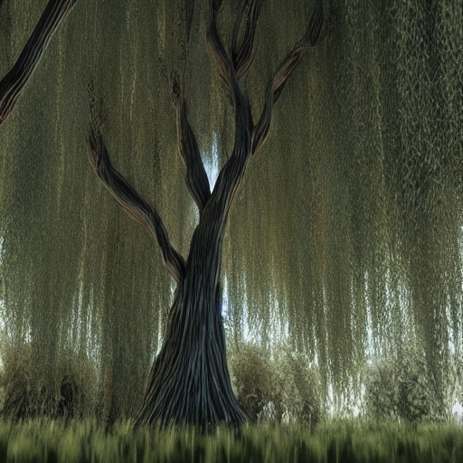

Description: The Whispering Willow is a towering tree with pale, silvery bark and cascading foliage that rustles with an otherworldly whispering sound. Its leaves shimmer with a faint, ethereal glow. They thrive in the mist-shrouded forests and marshy swamps of Tozathadax, where it forms dense groves that seem to sway and murmur with unseen voices. Each Whispering Willow can live for hundreds of standard Tozathadaxian years, serving as ancient sentinels of the planet's mysterious landscapes.
Planet: tozethadax